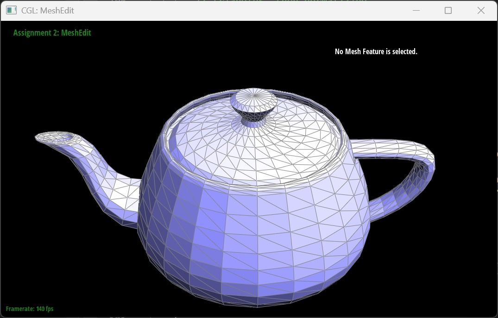
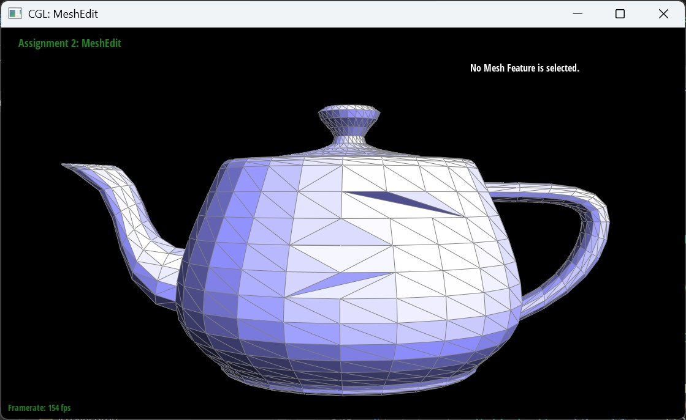

In this project, I implemented the De Casteljau Algorithm for Bezier Curves and Surfaces, as well as essential mesh editing operations such as edge flip, edge split, and loop subdivision using the half-edge data structure. These features are crucial for geometric modeling in computer graphics. Through this project, I gained a deeper understanding of Bezier curves/surfaces and mesh manipulation, particularly in handling adjacency relationships efficiently within the half-edge structure.
Section I: Bezier Curves and Surfaces
Part 1: Bezier curves with 1D de Casteljau subdivision
The De Casteljau Algorithm is a recursive method for evaluating points on a Bezier Curve, which is defined by a set of control points. The algorithm works by iteratively interpolating between these points using a parameter t, which varies from 0 to 1. At each step, new points are computed as weighted averages of existing points, with the weight determined by t. This process continues until only a single point remains, which lies on the Bezier curve.
To implement this, I created a function that takes in a list of control points and a parameter t. This function repeatedly applies linear interpolation to generate a sequence of intermediate points, gradually reducing the number of points until a single point is obtained. This final point represents the curve's position for the given parameter . The implementation was tested using a Bezier curve with six control points, and the results were visualized step by step. The progression of the algorithm shows how the control points are gradually refined into the final curve.
Additionally, I modified the control points and adjusted the parameter t to observe how the shape of the Bezier curve changes. The algorithm effectively captures smooth transitions between points, demonstrating its utility in modeling curves with varying shapes.
Iteration 0
Iteration 1
Iteration 2
Iteration 3
Iteration 4
Iteration 5
Bezier curve for perturbed points along varying t
Bezier curve for perturbed points along varying t
Part 2: Bezier surfaces with separable 1D de Casteljau
The De Casteljau Algorithm can be extended to evaluate Bezier surfaces by applying the same interpolation technique along two dimensions. Instead of working with a single sequence of control points, the algorithm first processes the rows of a control grid to generate a set of intermediate points. These points are then treated as new control points, and the algorithm is applied again along the columns to obtain the final surface point.
In my implementation, I first evaluated the Bezier surface along one axis, reducing the two-dimensional control grid to a single row of intermediate points. Then, I applied the De Casteljau Algorithm along the other axis to compute the final point on the surface. This approach ensures smooth surface interpolation by recursively refining the control points in both dimensions.
I tested my implementation using the bez/teapot.bez file, which represents a Bezier surface model of a teapot.
Bezier surface model of a teapot
Section II: Triangle Meshes and Half-Edge Data Structure
Part 3: Area-weighted vertex normals
My implementation of vertex normals utilized the half-edge data structure to efficiently traverse the mesh and compute per-vertex normals. Each vertex normal is computed as a weighted sum of the normals of the surrounding faces, where the weight is proportional to the area of each face. This ensures that larger faces have a greater influence on the vertex normal, leading to a smoother and more accurate shading result.
To compute the vertex normal, I first accessed the half-edge associated with a given vertex. Using the half-edge structure, I iterated over all faces adjacent to this vertex by traversing the outgoing half-edges. Since each half-edge stores a reference to its corresponding face, I could directly access the normal of each face during traversal. By iterating through all faces surrounding the vertex, I accumulated their normals while weighting them according to the face areas.
Determining the area of a face required computing the cross-product of two edge vectors. Given that each face in the mesh is a triangle, I selected two edges that share a common vertex and computed their cross-product. The magnitude of the resulting vector is proportional to twice the area of the triangle. Using this value as a weight, I scaled each face normal accordingly before adding it to the accumulated vertex normal.
One important aspect of this implementation was ensuring that the vertex normal was correctly normalized at the end of the process. After summing the weighted face normals, I normalized the final result to ensure that the vertex normal had unit length. This step was necessary to maintain consistent shading results across the mesh.
To validate my implementation, I applied it to the teapot model and compared the results between flat shading and Phong shading. Without vertex normals, the shading appeared faceted due to abrupt changes in surface normals between adjacent faces. However, after incorporating area-weighted vertex normals, the shading became significantly smoother.

Face normals (Flat shading)
Vertex normals (Phong shading)
Part 4: Edge flip
The edge flip operation modifies the topology of a mesh by replacing one diagonal edge shared between two triangles with the other diagonal. This operation is particularly useful in remeshing techniques and improving mesh quality.
To implement this operation, I first ensured that the edge being flipped was not a boundary edge. I then identified all relevant elements affected by the flip, including the four involved vertices, the four edges, the two faces, and the associated half-edges. Before performing any modifications, I manually mapped out the reassignments on paper to ensure consistency.
I created temporary variables for each of these elements using half-edge mesh traversal functions. The primary challenge in implementing the edge flip was carefully reassigning pointers to maintain a valid half-edge structure. The update process involved setting the correct relationships between the half-edges, edges, vertices, and faces so that they properly reflected the new topology.
After making the necessary pointer updates, I reassigned the half-edge pointers for each affected vertex, ensuring that they still referenced valid incident half-edges. The updated structure was then tested on a teapot mesh, where multiple edge flips were applied to observe the changes in topology.
During debugging, I encountered several issues where incorrect pointer assignments led to disconnected edges or incorrect face structures. Visualizing the half-edge relationships and systematically verifying each step allowed me to identify and correct these errors.
Teapot before edge flips

Teapot after edge flips (notice the shading differences)
Part 5: Edge split
The edge split operation subdivides an edge by inserting a new vertex at its midpoint and creating additional edges and faces to maintain mesh connectivity. This operation is essential for adaptive mesh refinement and enables finer geometric detail.
To implement this operation, I first determined the midpoint of the selected edge and created a new vertex at this position. I then updated the half-edge structure by introducing new half-edges and edges that connected the existing vertices to the newly inserted vertex. Each of these new elements was carefully assigned to the correct faces to preserve mesh integrity.
The most challenging aspect of this implementation was ensuring that the newly inserted vertex was correctly integrated into the mesh without disrupting the connectivity of surrounding faces. To achieve this, I mapped out the relationships between all affected elements before performing the split. This process involved updating references for vertices, edges, and half-edges while preserving the adjacency relationships required by the half-edge data structure.
Once the split was completed, I marked the newly created edges as isNew to facilitate later subdivision steps. The implementation was tested by applying multiple edge splits to a mesh and verifying that the topology remained consistent. Additional testing involved combining edge splits with edge flips to refine mesh quality further.
The final implementation successfully performed edge splits while maintaining a valid half-edge structure, allowing for controlled refinement of the mesh geometry.
Quadball before operations
Quadball after some edge splits
Icosahedron before operations
Icosahedron after four edge splits and two edge flips (with boundary handling)
Part 6: Loop subdivision for mesh upsampling
Loop subdivision refines a triangular mesh by introducing new vertices and adjusting their positions according to surrounding connectivity, effectively increasing the level of geometric detail while preserving smoothness. This technique ensures that high-frequency features in the mesh, such as sharp edges, become progressively smoother with repeated subdivision.
To implement Loop subdivision, I followed a multi-step process. First, I computed new positions for all vertices in the original mesh using the Loop subdivision weighting scheme. Existing vertices were updated based on their adjacent neighbors, with weights ensuring that the new shape retained smooth continuity. However, computing the positions of new vertices presented a unique challenge, as these vertices did not yet exist in the mesh. To handle this, I stored their computed positions in the newPosition field of the edges from which they would be created.
Next, I performed edge splits to introduce the new vertices at the midpoint of existing edges. To ensure a structured and predictable subdivision, I iterated only over the original set of edges, marking newly created edges separately to prevent redundant splitting. Once all edges were split, I adjusted the connectivity of the mesh by selectively flipping edges that connected old and new vertices, ensuring a more regular triangulation.
An important observation was that sharp edges and corners became rounded with each subdivision iteration. This effect is expected due to the averaging process inherent in Loop subdivision, which smooths out high-frequency geometric features. To mitigate excessive smoothing, I experimented with pre-splitting certain edges and flipping edges in a structured manner to preserve sharper features where needed.
Finally, I copied the computed newPosition values into the final vertex positions and reset flags to prepare for future refinement steps. Testing my implementation on the cube model revealed an interesting phenomenon: depending on the initial connectivity, repeated Loop subdivision led to either an asymmetric or symmetric final shape. This discrepancy stemmed from the initial triangulation of the cube's faces, where an inconsistent pattern could cause uneven smoothing.
By carefully pre-processing the cube with edge flips and splits before subdivision, I was able to enforce a more uniform initial structure, which resulted in a more symmetric refinement. This highlighted the importance of topology in guiding the subdivision process and preventing unwanted distortions.
Overall, my implementation successfully upsampled meshes while maintaining smoothness and continuity, demonstrating the power of Loop subdivision for refining surface geometry in computer graphics.